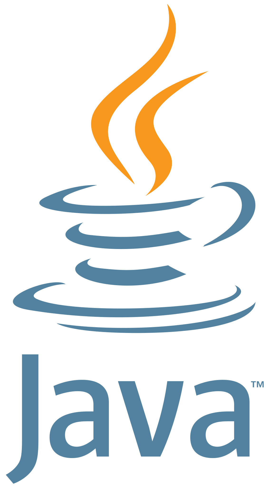

.png)
Principais tecnologias


- 


Ciência, Som e Inovação — projeto finalista da 15ª FETEPS.
Nossa equipe foi selecionada como finalista da 15ª Feira Tecnológica do Centro Paula Souza (FETEPS) com o projeto Bobina de Tesla Musical, apresentado no São Paulo Expo. Inspirado em Nikola Tesla, o projeto transforma faíscas elétricas em ondas sonoras, usando Arduino Uno para controlar frequências das descargas. Componentes chave: Transformador Flyback, Transistor, Módulo Relé e Arduino.
Plataforma IA para revisão automática — 2º lugar no 7º Hackathon CPS (Oracle).
O MemoryUp é uma plataforma multiplataforma que usa inteligência artificial para transformar vídeos, áudios e documentos em resumos, flashcards e exercícios personalizados. Desenvolvido durante o 7º Hackathon do CPS em parceria com a Oracle, o projeto conquistou o 2º lugar entre 92 equipes.
Plataforma inclusiva para conectar PCDs a oportunidades — finalista 6º Hackathon CPS.
O WorkAble conecta pessoas com deficiência a vagas compatíveis, oferecendo recursos de acessibilidade e um selo de inclusão para empresas. A plataforma foi finalista no 6º Hackathon CPS, destacando-se pelo propósito social e pelo modelo de integração entre candidatos e empresas.
Bobina de Tesla Musical: protótipo que gera som a partir de faíscas elétricas controladas com Arduino; apresentado na 15ª FETEPS.
MemoryUp: plataforma com IA que converte materiais em resumos, flashcards e exercícios; 2º lugar no Hackathon CPS.
WorkAble: solução para inclusão de PCDs no mercado de trabalho, com selo de inclusão e cadastro adaptado.
Olá! Sou Gabriel, técnico em Análise e Desenvolvimento de Sistemas (ETEC) e atualmente estudante de Bacharelado em Engenharia de Software na UTFPR. Tenho interesse crescente por tecnologia e programação, com experiência em HTML, CSS e JavaScript, além de conhecimentos em C, C#, Python, Java, PHP e Xamarin.
Trabalho com bancos de dados (SQL / MySQL) e tenho foco em desenvolver soluções que unam tecnologia e impacto social. Estou continuamente buscando aprendizado prático e novos desafios.
Atualmente curso Engenharia de Software na Universidade Tecnológica Federal do Paraná (UTFPR). O curso possui uma abordagem prática abrangente, com ênfase em engenharia de requisitos, arquitetura de sistemas, banco de dados e cibersegurança.
Ensino Médio integrado ao Técnico com disciplinas de programação web, banco de dados, desenvolvimento mobile, Arduino e projetos práticos. Projetos desenvolvidos: WorkAble (inclusão de PCDs), Bobina de Tesla Musical e MemoryUp.
Mais de 8 anos de estudo em inglês com foco em conversação, gramática e escrita; base sólida para comunicação técnica e redação.
Disponível para trabalhos, colaborações e oportunidades. Entre em contato por e-mail ou conecte-se nas redes.